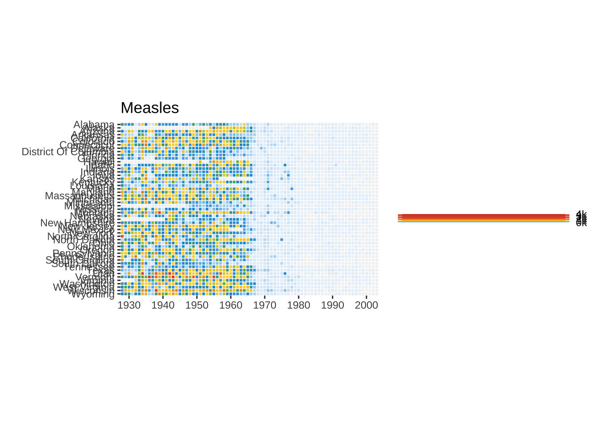

We use the iris data to get started. This dataset has four continuous variables and one categorical variable. It is important to remember about the data type when plotting graphs
ggplot(data=iris,mapping=aes(x=Petal.Length,y=Petal.Width))+geom_point(aes(color=Sepal.Width))+geom_smooth(method="lm")+scale_color_continuous(name="New Legend Title")+labs(title="This Is A Title",subtitle="This is a subtitle",x=" Petal Length", y="Petal Width", caption="This is a little caption.")
`geom_smooth()` using formula = 'y ~ x'
1.9 Axes modification
we are not happy with the x-axis breaks 2,4,6 etc. We would like to have 1,2,3… We change this using scale_x_continuous().
ggplot(data=iris,mapping=aes(x=Petal.Length,y=Petal.Width))+geom_point(aes(color=Sepal.Width))+geom_smooth(method="lm")+scale_color_continuous(name="New Legend Title")+scale_x_continuous(breaks=1:8)+labs(title="This Is A Title",subtitle="This is a subtitle",x=" Petal Length", y="Petal Width", caption="This is a little caption.")
`geom_smooth()` using formula = 'y ~ x'
1.10 Faceting
ggplot(data=iris,mapping=aes(x=Petal.Length,y=Petal.Width))+geom_point(aes(color=Sepal.Width))+geom_smooth(method="lm")+scale_color_continuous(name="New Legend Title")+scale_x_continuous(breaks=1:8)+labs(title="This Is A Title",subtitle="This is a subtitle",x=" Petal Length", y="Petal Width", caption="This is a little caption.")+facet_wrap(~Species)
`geom_smooth()` using formula = 'y ~ x'
1.11 Themes
change the default theme_grey() to theme_bw().
ggplot(data=iris,mapping=aes(x=Petal.Length,y=Petal.Width))+geom_point(aes(color=Sepal.Width))+geom_smooth(method="lm")+scale_color_continuous(name="New Legend Title")+scale_x_continuous(breaks=1:8)+labs(title="This Is A Title",subtitle="This is a subtitle",x=" Petal Length", y="Petal Width", caption="This is a little caption.")+facet_wrap(~Species)+theme_bw()
`geom_smooth()` using formula = 'y ~ x'
All non-data related aspects of the plot can be modified through themes. Let’s modify the colors of the title labels and turn off the gridlines. The various parameters for theme can be found using ?theme.
ggplot(data=iris,mapping=aes(x=Petal.Length,y=Petal.Width))+geom_point(aes(color=Sepal.Width))+geom_smooth(method="lm")+scale_color_continuous(name="New Legend Title")+scale_x_continuous(breaks=1:8)+labs(title="This Is A Title",subtitle="This is a subtitle",x=" Petal Length", y="Petal Width", caption="This is a little caption.")+facet_wrap(~Species)+theme_bw()+theme(axis.title=element_text(color="Blue",face="bold"),plot.title=element_text(color="Green",face="bold"),plot.subtitle=element_text(color="Pink"),panel.grid=element_blank() )
`geom_smooth()` using formula = 'y ~ x'
Themes can be saved and reused:
newtheme <-theme(axis.title=element_text(color="Blue",face="bold"),plot.title=element_text(color="Green",face="bold"),plot.subtitle=element_text(color="Pink"),panel.grid=element_blank())ggplot(data=iris,mapping=aes(x=Petal.Length,y=Petal.Width))+geom_point(aes(color=Sepal.Width))+geom_smooth(method="lm")+scale_color_continuous(name="New Legend Title")+scale_x_continuous(breaks=1:8)+labs(title="This Is A Title",subtitle="This is a subtitle",x=" Petal Length", y="Petal Width", caption="This is a little caption.")+facet_wrap(~Species)+theme_bw()+ newtheme
`geom_smooth()` using formula = 'y ~ x'
1.12 Controlling legends
If we don’t want to have the extra legend, we can turn off legends individually by aesthetic: guides(size=“none”).
Warning: ggrepel: 130 unlabeled data points (too many overlaps). Consider
increasing max.overlaps
1.14 Annotations
Custom annotations of any geom can be added arbitrarily anywhere on the plot.
ggplot(data=iris,mapping=aes(x=Petal.Length,y=Petal.Width))+geom_point(aes(color=Species))+annotate("text",x=2.5,y=2.1,label="There is a random line here")+annotate("segment",x=2,xend=4,y=1.5,yend=2)
An example of using error bars with points. The mean and standard deviation is computed. This is used to create upper and lower bounds for the error bars.
The aim of this challenge is to recreate the plot below originally published in The Economist. The graph is a scatterplot showing the relationship between Corruption Index and Human Development Index for various countries.
Make sure that the fields are of the correct type. The x-axis field ‘CPI’ and the y-axis field ‘HDI’ must be of numeric type. The categorical field ‘Region’ must be of Factor type.
X Country HDI.Rank HDI CPI Region
1 1 Afghanistan 172 0.398 1.5 Asia Pacific
2 2 Albania 70 0.739 3.1 East EU Cemt Asia
3 3 Algeria 96 0.698 2.9 MENA
4 4 Angola 148 0.486 2.0 SSA
5 5 Argentina 45 0.797 3.0 Americas
6 6 Armenia 86 0.716 2.6 East EU Cemt Asia
str(ec)
'data.frame': 173 obs. of 6 variables:
$ X : int 1 2 3 4 5 6 7 8 9 10 ...
$ Country : chr "Afghanistan" "Albania" "Algeria" "Angola" ...
$ HDI.Rank: int 172 70 96 148 45 86 2 19 91 53 ...
$ HDI : num 0.398 0.739 0.698 0.486 0.797 0.716 0.929 0.885 0.7 0.771 ...
$ CPI : num 1.5 3.1 2.9 2 3 2.6 8.8 7.8 2.4 7.3 ...
$ Region : chr "Asia Pacific" "East EU Cemt Asia" "MENA" "SSA" ...
But, the categories on the plot are different and need to be changed as follows:
From To
EU W. Europe OECD
Americas Americas
Asia Pacific Asia & Oceania
East EU Cemt Asia Central & Eastern Europe
MENA Middle East & North Africa
SSA Sub-Saharan Africa
Since the ‘To’ strings are a bit too long to be in one line on the legend, use \n to break a line into two lines. (Tip: \n is the newline character in R.)
From To
EU W. Europe OECD
Americas Americas
Asia Pacific Asia &\nOceania
East EU Cemt Asia Central &\nEastern Europe
MENA Middle East &\nNorth Africa
SSA Sub-Saharan\nAfrica
The strings can be renamed using string replacement or substitution. But a easier way to do it is to use factor(). The arguments levels and labels in function factor() can be used to rename factors.
`It’s important to use levels function to give orders of the regions.`
ec$Region <-factor(ec$Region,levels =c("EU W. Europe","Americas","Asia Pacific","East EU Cemt Asia","MENA","SSA"),labels =c("OECD","Americas","Asia &\nOceania","Central &\nEastern Europe","Middle East &\nNorth Africa","Sub-Saharan\nAfrica"))
Now, we add the trend line using geom_smooth. Check out ?geom_smooth and look under ‘Arguments’ for argument options and ‘Aesthetics’ for the aesthetic options.
Use method ‘lm’ and use a custom formula of y~poly(x,2) to approximate the curve seen on the plot. Turn off confidence interval shading. Set line thickness to 0.6 and line color to red.
Warning: Using `size` aesthetic for lines was deprecated in ggplot2 3.4.0.
ℹ Please use `linewidth` instead.
put the line behind the points:
Since we provided no aesthetic mappings to geom_smooth, there is no legend entry for the trendline. We can fake a legend entry by providing an aesthetic, for example; aes(fill="red"). We do not use the color aesthetic because it is already in use and would give us reduced control later on to modify this legend entry.
p <-ggplot(ec,aes(x=CPI,y=HDI,color=Region))+geom_smooth(aes(fill="red"),method="lm",formula=y~poly(x,2),se=F,color="red",size=0.6)+geom_point(shape=21,size=3,stroke=0.8,fill="white")p
2.4 Text Labels
Now we add the text labels. Only a subset of countries are plotted.
Use geom_text to subset the original data.frame to the reduced set above and plot the labels as text. See ?geom_text.
p <- p+scale_x_continuous(name="Corruption Perceptions Index, 2011 (10=least corrupt)",breaks=1:10,limits=c(1,10))+scale_y_continuous(name="Human Development Index, 2011 (1=best)",breaks=seq(from=0,to=1,by=0.1),limits=c(0.2,1))p
2.8 Scale Colors
Use scale_color_manual() to provide custom colors. These are the colors to use for the points: "#23576E","#099FDB","#29B00E", "#208F84","#F55840","#924F3E".
Use scale_fill_manual to change the trendline label since it’s a fill scale. The legend entry for the trendline should read ‘R^2=52%’.
p <- p+scale_color_manual(values=c("#23576E","#099FDB","#29B00E", "#208F84","#F55840","#924F3E"))+scale_fill_manual(name="trend",values="red",labels=expression(paste(R^2,"=52%")))p
2.9 Title
Title and caption can be added with labs.
Set the title to ‘Corruption and human development’.
Set the caption to ‘Sources: Transparency International; UN Human Development Report’.
p <- p+labs(title="Corruption and human development",caption="Sources: Transparency International; UN Human Development Report")p
2.10 Theme
We want to move the legend to the top and as a single row. This can be done using theme() option legend.position. See ?theme. guides() is used to set the number of rows to 1. We also set a custom font for all text elements using base_family="Gidole". This can be skipped if a font change is not required.
p <- p+guides(color=guide_legend(nrow=1))+theme_bw(base_family="Gidole")+theme(legend.position="top")p
The full script for this challenge is summarized here:
# read dataec <-read.csv("/Users/tianyuzheng/Library/CloudStorage/OneDrive-KarolinskaInstitutet/Project-Tianyu/phD_Course/RaukR_2024/Material/data_economist.csv",header=T)# refactorec$Region <-factor(ec$Region,levels =c("EU W. Europe","Americas","Asia Pacific","East EU Cemt Asia","MENA","SSA"),labels =c("OECD","Americas","Asia &\nOceania","Central &\nEastern Europe","Middle East &\nNorth Africa","Sub-Saharan\nAfrica"))# labelslabels <-c("Congo","Afghanistan","Sudan","Myanmar","Iraq","Venezuela","Russia","Argentina","Brazil","Italy","South Africa","Cape Verde","Bhutan","Botswana","Britian","New Zealand","Greece","China","India","Rwanda","Spain","France","United States","Japan","Norway","Singapore","Barbados","Germany")# plottingp1 <-ggplot(ec,aes(x=CPI,y=HDI,color=Region))+geom_smooth(aes(fill="red"),method="lm",formula=y~poly(x,2),se=F,color="red",size=0.6)+geom_point(shape=21,size=3,stroke=0.8,fill="white")+geom_text_repel(data=subset(ec,Country %in% labels),aes(label=Country),color="black",box.padding=unit(1,'lines'),segment.size=0.25,size=3,family="Gidole")+scale_x_continuous(name="Corruption Perceptions Index, 2011 (10=least corrupt)",breaks=1:10,limits=c(1,10))+scale_y_continuous(name="Human Development Index, 2011 (1=best)",breaks=seq(from=0,to=1,by=0.1),limits=c(0.2,1))+scale_color_manual(values=c("#23576E","#099FDB","#29B00E", "#208F84","#F55840","#924F3E"))+scale_fill_manual(name="trend",values="red",labels=expression(paste(R^2,"=52%")))+labs(title="Corruption and human development",caption="Sources: Transparency International; UN Human Development Report")+guides(color=guide_legend(nrow=1))+theme_bw(base_family="Gidole")+theme(legend.position="top",panel.grid.minor=element_blank(),panel.grid.major.x=element_blank(),panel.background=element_blank(),panel.border=element_blank(),legend.title=element_blank(),axis.title=element_text(face="italic"),axis.ticks.y=element_blank(),axis.ticks.x=element_line(color="grey60"),plot.title=element_text(face="bold"),plot.caption=element_text(hjust=0,size=8))p1
3 WSJ Heatmap
The aim of this challenge is to recreate the plot below originally published in The Wall Street Journal. The plot is a heatmap showing the normalized number of cases of measles across 51 US states from 1928 to 2003. X-axis shows years and y-axis shows the names of states. The color of the tiles denote the number of measles cases per 100,000 people. Introduction of the measles vaccine is shown as the black line in 1963.
Start by reading in the data. This .csv file has two lines of comments so we need to skip 2 lines while reading in the data. We also add stringsAsFactors=F to avoid the automatic conversion of character fields to factor type.
me <-read.csv("/Users/tianyuzheng/Library/CloudStorage/OneDrive-KarolinskaInstitutet/Project-Tianyu/phD_Course/RaukR_2024/Material/data_wsj.csv",header=T,stringsAsFactors=F,skip=2)head(me)
YEAR state value
1 1928 ALABAMA 3.67
2 1929 ALABAMA 3.20
...
5501 1957 ALASKA 2.16
5502 1958 ALASKA 2.05
...
The solution is to sum up all the cases for a state for all weeks within a year into one value for that year. This can be done using the summarise() function from package dplyr.
A custom function is used to sum over weeks. If all values are NA, then result is NA. If some values are NA, the NAs are removed and the remaining numbers are summed.
The dots in state names are replaced by spaces and the words are converted to title case (First letter capital and rest lowercase).
We also convert the column names to lowercase for consistency.
We can build up a basic ggplot and heatmap tiles can be plotted using the geom geom_tile. ‘year’ is mapped to the x-axis, ‘state’ to the y-axis and fill color for the tiles is the ‘total’ value.
Add borders around the tiles. We use reorder(state,desc(state)) to reverse the order of states so that it reads A-Z from top to bottom.
p <-ggplot(me3,aes(x=year,y=reorder(state,desc(state)),fill=total))+geom_tile(color="white",size=0.25)p
3.4 Scales
The extra space on left and right (gray) of the plot is removed using argument expand in scales. X-axis breaks are redefined at 10 year intervals from 1930 to 2010. Custom colors are used for the tiles: "#e7f0fa","#c9e2f6","#95cbee","#0099dc","#4ab04a", "#ffd73e","#eec73a","#e29421","#f05336","#ce472e". Since the color scale is a fill color on a continuous value and we want to supply n new colors, we use scale_fill_gradientn. Tiles with missing value is set to the color "grey90".
We can remove the x and y axes titles and add a plot title
p <- p+labs(x="",y="",fill="",title="Measles")p
3.6 Fixed Coords
We can use coord_fixed() to fix the coordinates for equal values in x and y direction. This should render perfectly square tiles.
p <- p+coord_fixed()p

3.7 Annotation
Add the annotation line and text to denote the introduction of the vaccine. The line is at the position 1963. Custom font ‘Gidole’ is used here. This can be skipped.
p <- p+geom_segment(x=1963,xend=1963,y=0,yend=51.5,size=.6,alpha=0.7) +annotate("text",label="Vaccine introduced",x=1963,y=53, vjust=1,hjust=0,size=I(3),family="Gidole")p
3.8 Theme
Here we change the following aspects of the plot using theme:
Change theme to theme_minimal to remove unnecessary plot elements.
Optional custom font. See ‘Custom font’ section under ‘Economist Scatterplot’.
Position the legend to bottom center.
Set legend font to color grey20.
Adjust size and justification of x and y axes text